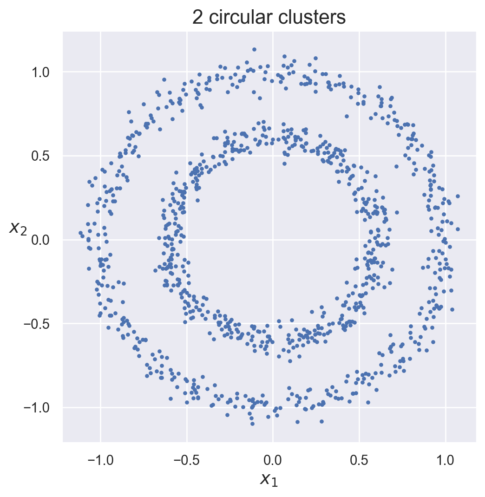

Anomaly Detection, sometimes referred to as outlier detection, is a machine learning approach that identifies data points that differ considerably from the rest of the sample. These outliers are aberrant points in the data that might signify odd behavior, mistakes, or infrequent events. The basic purpose of anomaly detection is to differentiate between normal and abnormal patterns in a dataset. This may be used in a variety of fields, including financial fraud detection, network security, industrial quality control, and healthcare monitoring. Statistical methodologies, machine learning algorithms, and unsupervised learning techniques are all common approaches to anomaly identification.
Unsupervised learning is especially useful in this situation since it does not rely on labeled data; rather, it aims to find patterns that vary from the norm based on the data’s underlying structure.
Once abnormalities are found, depending on the application, more inquiry or action might be performed. Anomaly detection is critical for ensuring system integrity and dependability by reporting odd occurrences that may necessitate attention or intervention.
DBSCAN for Outlier Detection
DBSCAN (Density-Based Spatial Clustering of Applications with Noise) is a well-known unsupervised clustering technique that may also be utilized for anomaly detection. DBSCAN, in contrast to typical clustering algorithms, finds dense clusters of data points and separates areas with lower point density as outliers or anomalies. Clusters are defined by the algorithm as areas of high data point density divided by areas of low density. Outliers are data points that fall outside of these concentrated zones. DBSCAN is beneficial in anomaly detection since it does not need setting the number of clusters in advance and can adapt to fluctuating data density. It is very good at detecting irregularly formed clusters and is resistant to noise. DBSCAN provides a versatile and fast method of finding outliers in datasets with complicated structures by labeling points that do not belong to any cluster as anomalies, making it useful in applications such as fraud detection and network intrusion detection.
The Code Breakdown
The DBSCAN algorithm from the scikit-learn package is used in the given Python code to conduct density-based clustering and anomaly detection on synthetic data created by the make_circles function. Here’s an explanation of what the code does:
Data Generation: Using scikit-learn’s make_circles function, the code produces synthetic data with two circular clusters. The generated data is then visualized with Matplotlib.
import numpy as npimport matplotlib.pyplot as pltimport seaborn as snssns.set()from sklearn.cluster import DBSCANfrom sklearn.datasets import make_circlesfrom sklearn import metricsimport warningswarnings.filterwarnings("ignore")X, y = make_circles(n_samples=1000, noise=0.05, factor=0.6)plt.figure(figsize=(6, 6))plt.scatter(X[:, 0], X[:, 1], c=None, s=5, cmap='autumn')plt.title("2 circular clusters", fontsize=16)plt.xlabel("$x_1$", fontsize=14)plt.ylabel("$x_2$", fontsize=14, rotation=0)plt.show()

We create a DBSCAN model with the supplied parameters (epsilon eps=0.05 and min_samples=5). Then the model is fitted to the generated data.
The Silhouette Coefficient, a measure of how well-defined the clusters are, is printed. The plot_dbscan function plots the findings, displaying core points, anomalies, and non-core points depending on the clustering.
In a Jupyter environment, please rerun this cell to show the HTML representation or trust the notebook. On GitHub, the HTML representation is unable to render, please try loading this page with nbviewer.org.
Model 1 (DBSCAN with eps=0.05 and a sample size of 5): With a small epsilon (eps) value and a low minimum samples (min_samples), the first DBSCAN model is quite sensitive. Because of the low density threshold, it may catch fine details but may also label certain locations as anomalies.
Model 2 (DBSCAN with eps=0.1 and min_samples=5): The second DBSCAN model raises the value of epsilon, resulting in bigger clusters. This might increase the model’s generalization and minimize its susceptibility to noise, perhaps resulting in more balanced clustering.
Model 3 (DBSCAN with eps=0.1 and min_samples=12): The third DBSCAN model boosts the epsilon value and the minimum sample size even further. This results in even larger clusters, making the algorithm less susceptible to noise and perhaps catching just the most significant patterns in the data.
To summarize, the selection of hyperparameters in DBSCAN has a major impact on the quality of clustering and anomaly detection. These settings must be fine-tuned based on the qualities of the data and the specific aims of the anomaly detection task.